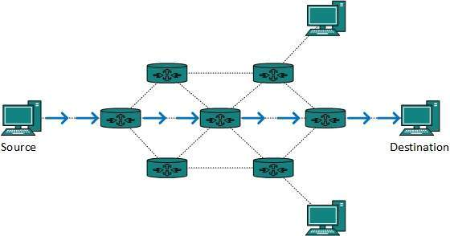

Subscribe Us
Back
Functionalities of NETWORK LAYER
third
ROUTING

Routing is a process which is performed by layer 3 (or network layer) devices in order to deliver the packet by choosing an optimal path from one network to another. Static routing is a process in which we have to manually add routes in routing table.
There are 3 types of routing: 1. Static routing 2. Default Routing 3. Dynamic Routing
1. Static routing – Static routing is a process in which we have to manually add routes in routing table.
Advantages – * No routing overhead for router CPU which means a cheaper router can be used to do routing. * It adds security because only administrator can allow routing to particular networks only. * No bandwidth usage between routers.
Disadvantage – * For a large network, it is a hectic task for administrator to manually add each route for the network in the routing table on each router. * The administrator should have good knowledge of the topology. If a new administrator comes, then he has to manually add each route so he should have very good knowledge of the routes of the topology.
2. Default Routing – This is the method where the router is configured to send all packets towards a single router (next hop). It doesn’t matter to which network the packet belongs, it is forwarded out to router which is configured for default routing. It is generally used with stub routers. A stub router is a router which has only one route to reach all other networks.
3. Dynamic Routing – Dynamic routing makes automatic adjustment of the routes according to the current state of the route in the routing table. Dynamic routing uses protocols to discover network destinations and the routes to reach it. RIP and OSPF are the best examples of dynamic routing protocol. Automatic adjustment will be made to reach the network destination if one route goes down.
A dynamic protocol have following features: * The routers should have the same dynamic protocol running in order to exchange routes. * When a router finds a change in the topology then router advertises it to all other routers.
Advantages – * Easy to configure. * More effective at selecting the best route to a destination remote network and also for discovering remote network.
Disadvantage – * Consumes more bandwidth for communicating with other neighbors. * Less secure than static routing.